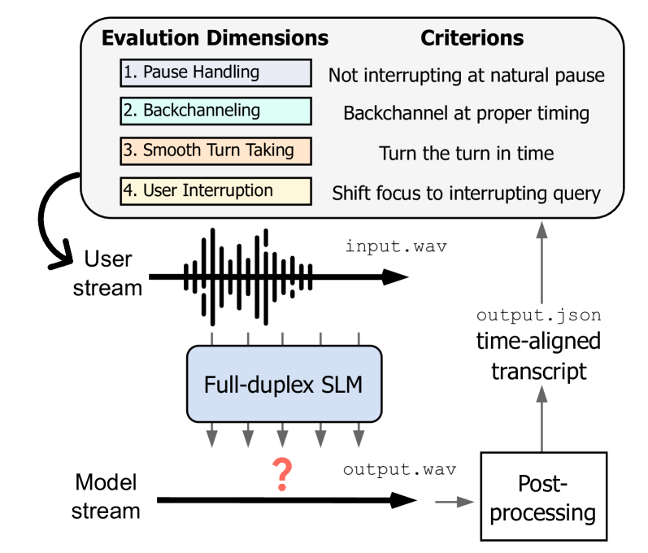

Lin, Chiang, Yang 외 (2025) · arXiv:2503.04721 — 사람 청취 평가 없이 재현 가능한 자동 지표만으로
full-duplex 음성대화 모델의 대화 주고받기(turn-taking) 4역량을 분리 측정하는 벤치마크. 이 문서는 단독으로 읽을 수 있도록
개요·지표 수식·과제·실험 결과·분석·한계를 모두 담는다.
음원 안내. 아래 각 과제 카드에는 우리가 생성한 대화 음원이 하나씩 붙어 있다.
모두 스테레오이며 왼쪽 채널 = moshi, 오른쪽 채널 = 사용자다. 플레이어는 해당 현상이 나타나는 지점부터 재생된다.
0왜 full-duplex를 따로 평가하나
기존 음성대화 모델은 “한 쪽이 말을 끝내면 다른 쪽이 시작한다”는 half-duplex 가정에 묶여 있다. 그러나 실제 대화는
full-duplex다 — 두 화자의 채널이 동시에 살아 있어 겹쳐 말하기(overlap), 맞장구(backchannel), 빈틈 없는 발언권 전환,
말 끊고 들어오기(interruption)가 상시 일어난다. 기존 평가는 대부분 응답의 내용 품질만 보고 상호작용의 타이밍을 무시했다.
설계의 뼈대. full-duplex의 실패는 결국 두 가지다 —
가져오면 안 될 때 가져옴 (false takeover)가져와야 할 때 못 가져옴 (missed turn-take)
그래서 하나의 원자 사건 Takeover를 정의하고, 과제마다 목표 방향만 뒤집는다. 이 대칭성이 v1 설계의 핵심.

Fig 1 — 4개 상호작용 차원 (논문 Figure 1)
1공통 원자 지표 — Takeover(TO)와 TOR
평가 시점 \(i\)마다 모델 채널의 반응을 이진 판정한다. 침묵하거나 backchannel만 내면 0, 그 외(발언권 탈취)면 1:
$$ \mathrm{TO}_i=\begin{cases}0,&\text{침묵 또는 backchannel}\\[2pt]1,&\text{그 외 (= floor takeover)}\end{cases}\qquad \mathrm{TOR}=\frac1N\sum_{i=1}^N \mathrm{TO}_i $$
여기서 backchannel은 다음을 동시에 만족하는 짧은 청자 신호로 엄격히 정의되어 \(\mathrm{TO}=0\)으로 집계된다.
보조 지표도 여기서 정의한다. 응답 지연은 사용자 발화 종료→모델 발화 시작 시간(TO=1 표본만), 빈도는 발화 duration으로 정규화한 초당 backchannel 수(TOR=0일 때만), JSD는 모델의 맞장구 타이밍 분포 \(P\)와 인간 주석 분포 \(Q\)의 대칭 발산이다 (0=완전 일치, 1=완전 어긋남):
4개 과제 전부가 이 하나의 TO 위에 세워진다. 과제 ①② 는 \(\mathrm{TOR}\downarrow 0\)(안 가져와야 함),
③④ 는 \(\mathrm{TOR}\uparrow 1\)(가져와야 함)로 목표 방향만 반전된다. 보조 지표는 신속성(Latency)·활동성(Freq)·인간정합(JSD)·내용(GPT-4o).
2네 과제 — 자극 · 지표 · 정답 조건 · 우리 데이터 · 음원
① Pause Handling — 화자가 아직 발언권을 쥐고 있음을 아는가
자극 구성 CANDOR(850시간, 2채널 실대화)에서 발화 내부 침묵 0.4–1.0초 구간 216개
+ ChatTTS [uv_break] 합성 137개. 근거: 영어 대화에서 약 1초가 자연스러운 침묵의 지각적 상한.
지표 · 목표 \(\mathrm{TOR}\downarrow\) (이상값 0). 발화 내부 침묵은 발언권 넘김 지점(TRP)이 아니다 —
여기서 말을 시작하면 “침묵 = 내 차례”라는 잘못된 규칙을 쓴다는 직접 증거.
침묵을 유지하거나 <1초·<2단어 backchannel만. ✗ 침묵 구간에 발화 시작 = false takeover.
우리 데이터 — 사용자 턴 안에 머뭇거림을 넣고 그동안 agent는 침묵/backchannel만:
[사용자] 어, 비행기를 좀 알아보는데— 아니, 시카고로 가는 걸로 할게요…
[moshi ] (사용자 발화가 끝날 때까지 침묵 → 종료 후 응답)
음원L=moshi / R=사용자 · ▶ 약 0:46 — 사용자가 “…I always get a little lost…” 하고 말끝을 흐리며 문장 중간에 멈추고 침묵하는 동안, moshi는 발언권을 낚아채지 않고 기다렸다가 사용자가 말을 마친 뒤 응답한다.
② Backchanneling — 발언권을 뺏지 않고 사람처럼 맞장구치는가
자극 구성 ICC(28.33분 미국영어 비격식 대화). 원어민 59명이 TRP마다 맞장구 시점을 주석한 55개 —
인간 타이밍 정답 분포가 존재해 JSD 계산 가능.
지표 · 목표 (3종) \(\mathrm{TOR}\downarrow\) · 빈도 \(\mathrm{Freq}=\#\text{events}/D\uparrow\)
(TOR=0일 때만) · 인간 분포와의 발산 \(\mathrm{JSD}\downarrow\).
모델의 맞장구 타이밍 분포 \(P\)(200ms 창)와 인간 주석 분포 \(Q\)의 대칭 발산. 셋이 모두 필요한 이유:
TOR만→무반응 만점 → Freq가 활동성 강제 → 그것만→남발 가능 → JSD가 사람 시점 정합 강제.
사람이 맞장구치는 시점에, 발언권 이동 없이 짧은 신호. ✗ 발언권 탈취 또는 완전 침묵(Freq=0) = 실패.
우리 데이터 — CANDOR 빈도 가중 샘플, 상대 발화의 유성 구간 30–80% 지점에 실제 겹침:
[moshi ] Nassau has some excellent snorkeling locations. The coral reefs just off…
[사용자] «맞장구, 상대 발화 위 겹침» 음-흠.
음원L=moshi / R=사용자 · ▶ 약 0:21 — moshi가 클로제의 월드컵 16골 기록을 길게 설명하는 동안, 사용자가 발언권을 가져가지 않고 “Yeah.” 짧은 맞장구만 얹는다.
③ Smooth Turn-Taking — 발화 종료를 감지해 낮은 지연으로 응답하는가
자극 구성 CANDOR에서 발화 간 간격 < 0.4초(인간 규범 200–250ms), 겹침 없음,
각 발화 > 4초 조건으로 필터한 119개. 뒤에 5초 무음을 붙여 응답 기회를 표준화.
지표 · 목표 \(\mathrm{TOR}\uparrow\) (이상값 1) · 응답 지연
\(\mathrm{Latency}=t^{\text{model}}_{\text{on}}-t^{\text{user}}_{\text{off}}\downarrow\) (TO=1 표본만). 정답이 “가져와라”이므로 TOR 방향이 ①②와 반대.
발화 종료 직후 신속히 응답. ✗ 너무 늦음 = 어색한 침묵 / 너무 이름 = 끼어듦.
우리 데이터 — 행동 조건부 전환 타이밍(질문→답변 중앙값 약 0.18초, 로그정규 분포, 거절·정정은 겹치지 않음):
[사용자] 지금 파리 날씨는 어때요?
[moshi ] (+0.18초) <ret> 네, 파리는 지금 섭씨 12도에 약간 흐려요…
음원L=moshi / R=사용자 · ▶ 약 2:55 — 사용자가 “Like what compounds? I’m curious.”라는 짧은 질문을 던지자 moshi가 지연 없이 곧바로 답을 시작한다.
④ User Interruption — 끼어들기를 감지하고 일관되게 적응하는가
자극 구성 GPT-4o 대본 + ChatTTS 10화자 200개. 끼어드는 발화를 선행 발화 약 7초 지점에 재생해
“모델이 한창 말하는 중”을 표준화.
지표 · 목표 \(\mathrm{TOR}\uparrow\) · \(\mathrm{Latency}\downarrow\) · 내용 점수 GPT-4o \([0,5]\uparrow\)(일관성·관련성·적응성).
두 축이 모두 필요: 타이밍 축만 보면 “빨리 아무말”을, 내용 축만 보면 사용자를 깔아뭉개고 계속 말하는 모델을 못 거른다.
즉시 양보하고 새 요구에 맞는 응답. ✗ 무시하고 계속 말함 / 빠르지만 동문서답 = 실패.
우리 데이터 — 단방향(사용자만 moshi를 끊는다), moshi 턴을 하이픈으로 절단하고 사용자 턴이 상대 유성 종료 0.45초 전에 겹쳐 든 뒤 적응:
[moshi ] «끊김» 그가 말하길, 그 느낌이 너무 강렬해서—
[사용자] «끼어듦» 잠깐만요. 지금 오아하카 시티 날씨는 어때요?
[moshi ] (불평 없이 새 요구에 즉시 적응 → 근거 기반 응답)
음원L=moshi / R=사용자 · ▶ 약 2:10 — moshi가 “…Wagyu beef from the Kobe region…—” 하고 말하는 중간을 사용자가 끊고 “Oh, I’ve heard of Kobe beef! It’s, like, really expensive, right?”라는 새 질문을 던진다.
Freeze-Omni가 내용 축 최고(3.615, barge-in 관리). Moshi는 즉각 반응(0.257초)하나 내용 붕괴(0.765). dGSLM은 둘 다 실패(0.201 / 2.531초).
종합. 4역량을 동시에 잘하는 모델이 없다 — end-to-end=“빠르지만 무례·내용 약함”, cascaded·상용=“정중하지만 느림”.
아키텍처만으론 못 풀며, 바람직한 대화 주고받기 행동 분포 자체를 학습 데이터에 심는 것이 직접 해법 — 이것이 본 데이터셋 생성의 동기다.
6한계 (저자 명시)
① 인간 선호와의 연결 부재 — 지표는 서술적일 뿐, “바람직한 값”은 사용자가 판단해야 한다.
② 영어 한정 — 다국어 일반화 미검증. (본 데이터셋은 한국어를 직접 생성해 이 갭을 겨냥.)
③ 후속 — 인간 판단 연구를 통합한 선호 기반 채점, 다국어 확장을 제안.